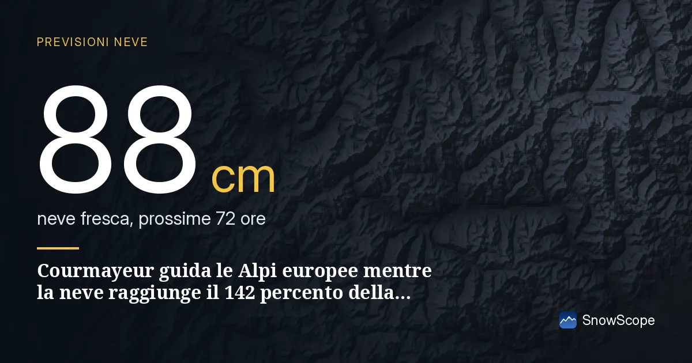

Bollettini neve · Regioni della neve
Regioni della neve: Courmayeur avrà la maggior parte della neve nuova sulle Alpi europee nei prossimi 72 ore, con una previsione di 88 cm che …
Courmayeur guida le Alpi europee mentre la neve raggiunge il 142 percento della norma

Courmayeur avrà la maggior parte della neve nuova sulle Alpi europee nei prossimi 72 ore, con una previsione di 88 cm che arriverà dove la profondità misurata è già del 42 percento sopra la norma per novembre. La forza della stagione precoce significa che la neve in arrivo si accumulerà su una base solida piuttosto che su una copertura sottile.
Classificazione delle Alpi europee e forza della stagione precoce
Courmayeur guida le previsioni su tutte le Alpi per i prossimi 72 ore con 88 cm di neve nuova sui versanti superiori, ma la storia più importante è la forza della stagione precoce. La profondità di neve misurata a Courmayeur è di 27 cm, il 42 percento sopra la media per questa data negli inverni passati—la profondità tipica qui è di 19 cm. Questo importa per gli sciatori: quando la neve cade sulla base esistente piuttosto che sul terreno nudo, la profondità aumenta più velocemente e dura più a lungo.
Les Grands Montets segue nella classifica delle previsioni con 79 cm, e La Thuile Ski aggiunge 78 cm. Questi numeri suggeriscono che le Alpi interne intorno al massiccio del Mont-Blanc riceveranno le precipitazioni nevose più abbondanti nei prossimi 72 ore. La finestra di 24 ore fino al 16 novembre porta 9-11 cm ai tre principali resort, con la maggior parte che arriva dal 16 al 18 novembre.


Abbiamo confrontato la neve del 10 novembre con la neve più alta di ogni inverno in 46 stazioni sciistiche, su 46 inverni. Un inizio nevoso aiuta, ma meno di quanto pensino molti sciatori.

Una mappa delle pendenze di Les Grands Montets e di altri sette comprensori mostra quanto terreno supera i 30°, 35° e 40°, e perché questa soglia conta per le valanghe.